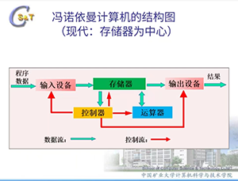

第一章
- 1.信息是物质系统运动的本质特征，是物质系统运动的方式、运动的状态及运动的有序性，是客观存在的事实，是物质运动轨迹的真实反应。
通俗的讲，信息一般泛指包含于消息、情报、指令、数据、图像、信号等形式之中的新的知识和内容。
- 2.第一、在客观上是反映某种客观事物的现实情况
第二、在主观上信息是可接受的、可利用的，并能指导人们的行为
- 3.数据是未经过加工的信息，而信息是数据经过加工以后的能为某个目的使用的数据，信息是数据的内容或诠释。
将数据加工为信息的过程称为信息的加工或处理
- 4.感测技术、通信技术、计算机和智能技术、控制技术
第三章
- 1.指令是计算机能够识别的命令。
指令系统是计算机能够识别的所有指令的集合
- 2.以中央处理器CPU为主的体系结构：
程序与数据在计算机中均按二进制存储；
程序和数据的处理是在内存中执行；
在CPU的控制下，自动从存储器中取出指令并执行，完成各种工作。
指令处理方式按逻辑顺序一条条指令地处理:
在运行时，从内存中取出一条指令；
按指令要求，从存储器中取出数据进行指定运算；
按地址把结果送到内存中去。再取下一条指令，重复上述操作，直到结束为止。
- 3.将计算过程描述为由多条指令按一定顺序组成的程序，并放入存储器保存。
指令按其在存储器中存放的顺序执行；
由控制器控制整个程序和数据的存取以及程序的执行；
以运算器为核心，所有的执行都经过运算器。
运算器:计算机对数据进行加工处理的部件，在控制器的控制下执行程序，完成各种算术和逻辑运算。
存储器:计算机记忆和存储的部件，用于存储数据和程序。
控制器:指挥整个计算机的各个部件，按照指令的要求有序的协调工作。
输入\输出设备:I/O设备，用户通过输入设备将数据和程序输入计算机，用输出设备将计算机处理结果显示或打印出来。
